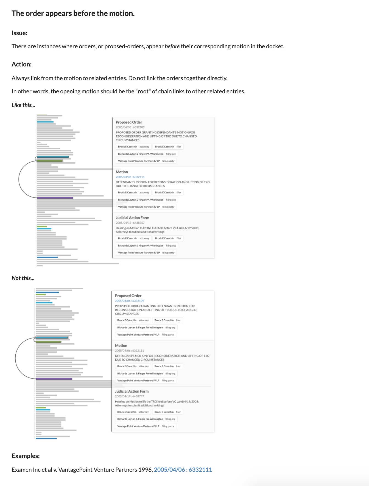

deca
Docket entry chaining annotation.
Individual accounts
- Individual accounts for administrators and users.
Annotate, then adjudicate
- Annotation
- Adjudication

Rapid annotation using keys
TODO
And you can also mouse of course.
Track progress and triage disagreement

Better conversation, more consistent annotation
-
The ability to directly link to points in event chains helps use move faster with higher quality.
-
Use over instant messaging to easily be able to ask specific questions, provide precise examples, etc.
-
TODO show Teams message visual
-
guidelines are integrated directly into the application.
- this means deployed in sync with app,
- can explain a topic, and directly link to multiple examples.
- TODO show annotation guidelines

Search all dockets
TODO